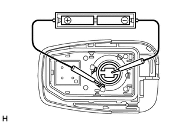
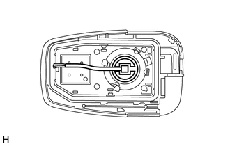
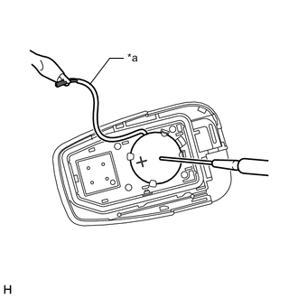

PROCEDURE
INSPECT ELECTRICAL KEY TRANSMITTER SUB-ASSEMBLY
Inspect the operation of the electrical key transmitter sub-assembly.
Remove the transmitter battery from the electrical key transmitter sub-assembly.
Click here

Install a new or known good transmitter battery.
Note
When replacing the transmitter battery, before starting work, remove static electricity that has built up in the body by touching, for example, the vehicle to prevent the electrical key transmitter sub-assembly from being damaged.
Tech Tips
If a new or known good transmitter battery is not available, first connect 2 new 1.5 V batteries in series. Then connect leads to the batteries and apply 3 V to the electrical key transmitter sub-assembly, as shown in the illustration.
From outside the vehicle, approximately 1 m (3.28 ft.) from the driver door outside door handle, test the electrical key transmitter sub-assembly by pointing its key plate at the vehicle and pressing an electrical key transmitter sub-assembly switch.
| OK |
|---|
| The door lock can be operated via the electrical key transmitter sub-assembly. |
| The LED comes on more than once. |
The operational area differs depending on the user, the way the electrical key transmitter sub-assembly is held, and the location.
The weak radio waves of the electrical key transmitter sub-assembly may be affected if the area has strong radio waves or noise. The electrical key transmitter sub-assembly operation area may be shortened or the electrical key transmitter sub-assembly may not function.
Inspect the transmitter battery capacity.
Remove the transmitter battery from the electrical key transmitter sub-assembly that does not operate. Attach a lead wire (0.6 mm (0.0236 in.) in diameter or less including wire sheath) with tape or equivalent to the negative terminal.
Note
Do not wrap the lead wire around a terminal, wedge it between the terminals, or solder it. A terminal may be deformed or damaged, and the transmitter battery will not be able to be installed correctly.

Carefully pull the lead wire out from the position shown in the illustration and install the previously removed transmitter battery.
Note
When replacing the transmitter battery, before starting work, remove static electricity that has built up in the body by touching, for example, the vehicle to prevent the electrical key transmitter sub-assembly from being damaged.

| *a | GND |
Check the transmitter battery voltage.
Tech Tips
When measuring the transmitter battery voltage, while operating the lock sensor of a door handle, bring the electrical key transmitter sub-assembly within the entry operating range to perform the measurement. For the entry operating range, refer to System Description.
Perform the measurement when the key is at room temperature.
The key sends voltage information to the certification ECU (smart key ECU assembly) when it is transmitting. When this voltage is 2.1 V or less the Data List item "Key Low Battery" displays "Yes".
| Standard Voltage | ||||||
|---|---|---|---|---|---|---|
|
If the result is not as specified, replace the transmitter battery.